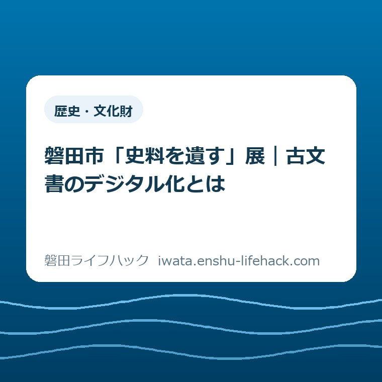

歴史・文化財
磐田市「史料を遺す」展｜古文書のデジタル化とは

この記事の要点
Q. 古い記録をデジタル化すると、何が残せるの？
A. 古文書のデジタル化は、紙の記録を画像などのデータにし、保存や利用につなげる取り組みです。磐田市歴史文書館2階の「史料を遺す」展は2026年9月30日まで。無料・申込不要ですが土日祝は休館です。画像を作ることと原本の処分は別の判断。今日は家に残る古い記録を一つ、誰の何の記録か家族と確かめてください。
古い記録が残る家には、保管してきた人がいる
実家の古い手紙や帳面が残っているのは、誰かが場所を空け、引っ越しや片付けのたびに持ち続けてきたからです。紙をしまう棚も、家族に中身を説明する時間も要ります。「残せばよい」の一言で、その負担まで片付くわけではありません。
家の記録の扱いは、持ち主の希望、紙の状態、書かれた内容で変わります。施設への寄贈や利用の条件も個別確認が必要です。本記事は一律の保存方法や受入制度を案内するものではなく、展示を入口に、家族が残す意味を考える読み物です。
大石浩之（磐田市／不動産業）です。私は、記録を守る話を家の片付けと切り離さずに考えたい。残す側に必要なのは、価値をすぐに見抜く能力より、分からない物を分からないまま引き継ぐための手掛かりだと思っています。
2026年9月23日に磐田市の公式案内を確認しました。竜洋支所内の歴史文書館では、古文書とデジタル化を扱う展示が9月30日まで続きます。展示を見に行ける家族にも、平日に時間を取れない家族にも、自宅の一つの記録へ目を向けるきっかけになります。
「史料を遺す」展の会期と、出かける前の確認
磐田市歴史文書館平常展「史料を遺す～古文書とデジタル化～」は、2026年5月1日から9月30日までの開催です。市の展示案内は、歴史文書館が所蔵史料を後世に遺すために行うデジタル化を紹介する、と説明しています。
会場は歴史文書館の2階で、所在地は磐田市岡729-1、磐田市竜洋支所内です。開館時間は9時から17時、入館は16時30分まで。費用は無料、申込みは不要で、対象はどなたでもとされています。土曜日・日曜日・祝日は休館です。
2026年9月23日は、国立天文台の暦要項で秋分の日と確認できます。水曜日でも祝日のため、この日は展示を見られません。市の通常案内と暦を照合すると、9月24日・25日・28日・29日・30日が会期末までの開館日に当たります。臨時変更は出発前に確認してください。
市の展示案内は7月9日更新で、7月21日から展示の一部を変更するとしています。文化財課展示・イベント情報も8月31日更新で同じ会期を掲載しています。具体的に何が入れ替わったかは、この二つのページだけでは分かりません。
同じ建物の1階では、小学校に関する平常展も案内されています。会場を取り違えないために、「懐かしの小学校」展の会場と日程を整理した記事も参照できます。ただし、二つの展示を必ず一度に回る必要はありません。家族の帰宅時刻に合わせて予定を組めば十分です。
デジタル化で残すのは、画像と探す手掛かり
古文書のデジタル化を暮らしの言葉にすると、紙にある記録を画像などのデータにし、保存や利用につなぐことです。手元で拡大して見る画像と、どんな記録かを探すための説明は、役割が違います。写真を一枚撮るという入口から、その先の使い方まで考える話です。
国立公文書館の「資料の探し方について」では、デジタルアーカイブで目録を検索し、デジタル画像等を閲覧できると案内しています。目録とは、資料を探すための情報です。画像が見えることと、探したい記録にたどり着けることは、同じ作業ではありません。
同館は、目録情報が資料の表紙などを基に作られているため、検索結果が十分でない場合もあると説明しています。公的な検索サービスでも、言葉を入れれば欲しい答えが必ず出るわけではない。この点は、家の記録を整理するときにも参考になります。
ここからは家庭で考えるための例です。写真のファイル名が撮影日時だけなら、写っている家がどこか、帳面が誰の物かまでは伝わりません。家族の一人には分かる画像でも、受け取る側には説明のない紙の写真になることがあります。
例えば「祖父の帳面らしい」と聞いた場合、私は「祖父の帳面」と確定して書くより、「家族の話では祖父の帳面。記入者は未確認」と残すことを勧めます。推測を消して事実に見せるより、何が分かっていないかを伝える方が、次の人が調べる出発点になります。

良い点——残った物だけでなく、遺す仕事を見せる
「史料を遺す」展の良い点は、歴史上の出来事だけでなく、史料を後世へ渡す取り組みを展示の主題にしていることだと私は考えます。記録が展示ケースに届くまでにも、残すと決めた人と、扱いを考えた人がいる。その仕事へ目を向ける入口になります。
私は、家族が展示から持ち帰るものは、古文書を読めるようになることだけではないと思います。「うちの押し入れの封筒も、誰かが残してきた物だった」と考え直すことにも意味がある。片付けを担当する人の判断を、家族全員が少し理解する機会になるからです。
無料で申込みが要らない点も、家族の予定を組む上で助かります。参加者を先に決め、予約を取り直す段取りが要らないからです。ただし、見学のための移動や、平日に時間を空ける負担は残ります。無料という案内を、家族の手間もゼロという意味には読み替えたくありません。
もう一つ、私は「デジタル化」を身近な記録と結び付けられる点を評価します。難しい機器の名前を覚える前に、何を次の人へ渡したいのかを考えられる。市の案内が掲げる後世へ遺すという目的は、家庭でも出発点として共有できるものです。
地域の歴史を物から考える入口には、兜塚古墳の出土品を取り上げた記事もあります。私は、展示された物の見どころと、その物が残された経緯の両方に目を向けたい。家にある記録にも、内容とは別に「どうしてここにあるか」という問いが立つからです。
注文したい点——データを作った先も知りたい
デジタル化の紹介について私が注文したい点は、画像を作ることと、将来も使える状態を保つことの違いが伝わる案内です。市公式の展示ページでは、撮影方式、データの保存先、ネット公開の範囲までは確認できません。展示会場で説明がないと断定する趣旨ではありません。
もし見学時に説明を確かめるなら、私は「画像と元の史料を、どう結び付けているか」を知りたいと思います。見た目の鮮明さだけでは、どの箱のどの一冊かは伝わらないからです。家庭の片付けへ持ち帰るにも、機器の性能より先に役立つ問いです。
次に気になるのは、利用できる範囲です。デジタル化した史料がすべてインターネットで公開される、と市の案内からは読めません。撮影した、保存した、公開したという言葉を一続きにせず、何ができるようになったかを分けて伝えてもらえると、見学する側も理解しやすいと考えます。
家庭でも、画像を作ることと、親族以外へ見せることは別の相談です。手紙なら、差出人や受取人の名前も写ります。私は、記録を残したいという希望があっても、すぐ公開する必要はないと思います。誰に見せるための画像かを先に決めれば、家族の話し合いの範囲も絞れます。
保存の仕組みを紹介する際には、続ける人の手間も見えるとよいと私は感じます。データの置き場所を覚えている人が一人だけなら、その人に問い合わせが集まります。市の具体的な運用は未確認ですが、家庭でまねる部分は、担当を一人に固定しない説明の残し方です。
家の古い記録は、文字より周りの情報から考える
家族で古い記録を確かめるときは、読めない文字を全部解くより、誰の物か、どこにあったかを先に話す方法があります。ここから紹介するのは、市の保存指導ではなく、私が家族の段取りとして考える提案です。資料の状態に応じた扱いは、専門の窓口へ相談してください。
例えば、一枚の古い写真を選んだとします。写っている人の名前が分からなくても、「この封筒に入っていた」「家のこの棚にあった」は別の情報です。私は、画像だけを切り出す前に、入れ物との関係も説明メモに残したい。調べる材料を自分たちで減らさないためです。
紙に年号が見えるなら、そのまま写し、読めない所は空欄にする案を勧めます。西暦へ直す作業と、元の表記を残す作業を一度に済ませなくても構いません。曖昧な数字を埋めて整った一覧を作るより、後で確かめられる記録の方が私は使いやすいと思います。
家族の記憶が食い違う場合も、どちらかへ急いで統一しなくてよい。説明メモを作るなら「父はこの家だと言う、叔母は別の家だと言う」と、誰の説明かを分ける案があります。写真の内容と、後から聞いた話が区別できれば、次の人が判断を引き継げます。
撮影するかどうかも、その日の宿題にしなくて構いません。傷んだ紙や開きにくい帳面を、画像に収めるために無理に広げるのは避けたい。私は、状態に不安がある物は動かさず、何がどこにあるかを確認してから、扱い方の相談先を確かめる順序を勧めます。
片付けの日程が先にある家では、記録の調査まで家族一人で抱える必要はありません。空き家相談会に向けた家族の相談メモでは、分かることと未確認のことを分ける考え方を紹介しました。古い紙についても「内容不明の箱がある」と伝えるところから始められます。
大石の視点——画像にしても、判断は丸投げしない
私は、古い記録のデジタル化に前向きです。離れて暮らす家族が同じ画像を見ながら話せるなら、原物を受け渡す段取りを減らせます。ただし、画像を作ったという事実だけで、原本の意味も家族の希望も確認済みになるとは考えません。
画像にしたから、もう捨てていい。私はこの飛躍には反対です。データを作る道具に、残すかどうかの判断まで丸投げしてはいけない。原本をどう扱うかは、何の記録か、誰が持っているか、何に使うかを踏まえて別に考えることです。
一方で、私は「全部残せば安心」とも言い切れません。保管する家族の部屋や時間には限りがあります。何を残すかを決める前に、誰が負担しているかを見落としたくない。記録の価値がまだ分からない段階で、家族へどこまで作業を頼むべきかは、私にも迷いがあります。
だから私が提案するのは、家じゅうの紙の画像化ではありません。一つの記録について、持ち主や中身を家族と確かめることです。展示で知った技術を家庭に持ち帰るなら、作業量を増やすより、次に判断できる材料が一つ増える使い方にしたいと考えます。
古文書を読み取る機器やAIを市が展示で使っているかは、本記事では確認していません。デジタル化という言葉だけで、文字が自動で正しく読めると受け取らないようにしたい。私の評価は技術の採点ではなく、道具の先に人の確認を残すという立場です。
対案・結論——今日は一つ、家族に確かめる
2026年9月23日にできる一歩は、家に残る古い記録を一つ選び、「これは誰の、何の記録だろう」と家族に確かめることです。展示は祝日休館ですが、記録の話は家でも始められます。家族が離れていれば、次に話せる日に一つ尋ねる予定を置くだけでも構いません。
対象は、無理に取り出さなくても見られる写真や封筒などから選ぶ案があります。私は、最初から価値がありそうな物を探す必要はないと思います。いつも置いてある一つを選べば、保管してきた人も話を始めやすく、片付け全体の相談に広げずに済みます。
返事があれば、覚えておきたい一言だけ別の紙やメモに残す。返事が「分からない」でも、失敗ではありません。誰にも確認していない状態と、家族へ聞いたが不明だった状態は違います。私は、次に相談するとき、その区別が説明の助けになると考えます。

メモを作るなら、写真のデータと同じ名前を付けるなど、後で対応が分かる形を勧めます。説明を別の端末に置いて家族が探せなくなるより、画像を渡す際に一緒に読める形が便利だと思います。具体的な保存先は、家族が普段使えて、管理できる方法から選べばよいでしょう。
展示の見学は、その一歩の後で選べる機会です。家にあった記録を思い浮かべながら、何をデータに残し、何を人が説明しているかを見る。私は、専門用語をすべて覚えなくても、自分の家で確かめたい問いを持ち帰れれば、十分に意味があると考えます。
家の史料を施設へ持ち込むことや、寄贈することは別の判断です。今回確認した展示案内は、家庭の記録を一律に受け入れるとは書いていません。相談を希望する場合は、まず歴史文書館へ問い合わせ、対象や持込方法を確認してください。本文の提案を受入れの約束と受け取らないでください。
「史料を遺す」展とデジタル化のよくある質問
「史料を遺す」展の見学条件と、家庭の古い記録の扱いは分けて考える必要があります。以下は2026年9月23日に確認した公式案内と、本記事で示した判断の範囲です。具体的な保存方法や受入れ条件は、資料ごとに確認してください。
「史料を遺す」展はいつまで、どこで見られますか？
磐田市歴史文書館2階、磐田市岡729-1の竜洋支所内で、2026年9月30日まで開催されます。9時から17時、入館は16時30分までです。無料・申込不要ですが土日祝は休館。9月23日も秋分の日で休館です。出発前に市公式の展示案内で最新の開催状況を確認してください。
古文書をデジタル化したら、原本は処分してよいですか？
画像化しただけで原本を処分してよいとは判断できません。画像を作ることと、原本をどう扱うかは別の検討です。持ち主の希望、資料の内容や状態を踏まえ、判断に迷う場合は扱いを専門の窓口へ相談してください。本記事では家庭の資料の価値や、個別の処分可否を判定していません。
家にある古い記録を、そのまま歴史文書館へ持参できますか？
今回確認した市の展示案内では、家庭の史料の持込や寄贈の受入条件は確認できません。見学の申込不要という案内と、史料の受入れは別です。希望する場合は歴史文書館へ事前に問い合わせ、どんな物か、どこにあったかを伝えて、相談方法と持込の可否を確かめてください。
展示の日程や利用条件は変更される場合があります。原本の保存・処分の個別判断は専門の窓口へ相談し、見学や問い合わせの前には、最後に必ず磐田市公式の展示ページで最新情報をご確認ください。
参考にした公式情報
- 磐田市「歴史文書館平常展『史料を遺す～古文書とデジタル化～』」（2026年9月23日確認）
- 磐田市「文化財課展示・イベント情報」（2026年9月23日確認）
- 国立公文書館「資料の探し方について」（2026年9月23日確認）
- 国立天文台「令和8年（2026）暦要項・国民の祝日」（2026年9月23日確認）

最終確認日：2026-09-23 ／ 本記事は公表情報と執筆者の見解を分けて記載しています。制度・数値・公開状況は変更される場合があるため、最新情報は磐田市公式ページでご確認ください。